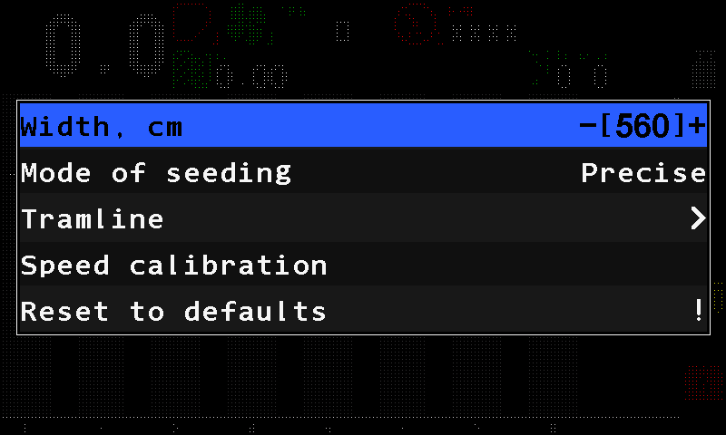
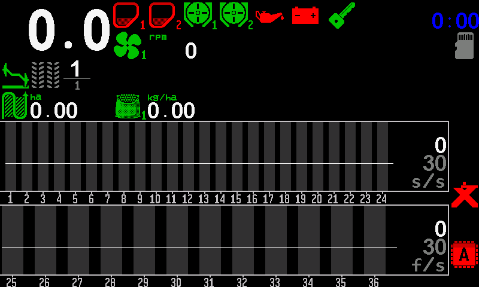

Régler le rythme de jalonnage
Ce qu'est un rythme de jalonnage, calculé pour votre semoir et votre pulvérisateur, et comment le régler pas à pas sur le panneau.
Un jalonnage est la voie dans laquelle le pulvérisateur passera plus tard. Vous la créez maintenant, pendant le semis, en coupant une ou deux sections sur certains passages, de sorte que rien ne soit semé là où passeront les roues du pulvérisateur. Quels passages, cela dépend de la largeur du semoir par rapport à celle du pulvérisateur. Ce motif, qui se répète sur le champ, est le rythme.
Comment fonctionne un rythme — un exemple
Un semoir de 6 mètres et un pulvérisateur de 18 mètres : un passage sur trois doit porter la voie. Le rythme comporte trois passages, et l'actionneur 1 coupe ses sections sur l'un d'eux.
| Passage | Actionneur 1 | Ce qui est semé |
|---|---|---|
| 1 | coupe ses sections | Tous les rangs sauf les rangs du jalonnage — la voie est faite. |
| 2 | ouvert | Tous les rangs. |
| 3 | ouvert | Tous les rangs. |
| 1 de nouveau | coupe | La voie suivante, 18 m plus loin. |
Le panneau compte les passages et coupe les sections au bon moment. Après le dernier passage, il reprend au passage 1.
Ce que le panneau permet
| Rythmes mémorisés | Trois. Un seul est actif à la fois. Gardez les motifs des machines avec lesquelles vous travaillez et passez de l'un à l'autre. |
| Actionneurs dans un rythme | Quatre. |
| Passages de coupure par actionneur | Quatre passages différents du même rythme. |
| Passages dans un rythme | Au moins un. |
Réglage
Les éléments de jalonnage se trouvent sous « Seeding machine parameters » (paramètres du semoir), qui exige le niveau Agronomist (agronome) : Activer le niveau Agronomist.
Sur l'écran d'accueil, appuyez sur « MENU », sélectionnez « Settings » (réglages) et appuyez sur « MENU ».

Le menu principal. Sélectionnez « Seeding machine parameters » et appuyez sur « MENU ».

Le menu Settings ; Seeding machine parameters en bas. Sélectionnez « Tramline » (jalonnage) et appuyez sur « MENU ».

Le menu Seeding machine parameters avec l'élément Tramline. Réglez « Tramline » sur « Yes » (oui) avec « PLUS ». Sélectionnez ensuite « Tramline rhythm settings » (réglages du rythme de jalonnage) et appuyez sur « MENU ».

Le menu Tramline. Sur « Rhythm » (rythme), choisissez le numéro du rythme avec « PLUS » / « MINUS », appuyez sur « MENU » et choisissez « Select » (sélectionner). Le mot « Active » (actif) apparaît à côté du numéro — sans lui, le rythme est mémorisé mais n'est pas utilisé.

Le menu du rythme : Select, Reset rhythm settings. Descendez jusqu'à « Bouts » (passages) et réglez le nombre de passages du rythme.
Allez à la cellule encadrée sous le titre d'activation et appuyez sur « MENU ». Choisissez le numéro de l'actionneur, puis le passage sur lequel il doit couper ses sections.
Si le motif l'exige, ajoutez d'autres passages au même actionneur — jusqu'à quatre — avec la cellule encadrée au bout de sa ligne, ou un autre actionneur avec la cellule de la ligne vide en dessous.
Appuyez sur « BACK » jusqu'au retour de l'écran d'accueil. Le rythme est enregistré ; l'indicateur de jalonnage montre le passage en cours au-dessus et le nombre de passages en dessous.

L'écran d'accueil avec l'indicateur de jalonnage, passage 1 sur 1.
Revenez au niveau Operator (opérateur) avant de travailler — au-dessus, aucune alarme n'est affichée.
Le formulaire du rythme

- Rhythm. Le numéro du rythme ; « PLUS » et « MINUS » parcourent les trois.
- « Active ». Ce rythme est celui qui est utilisé.
- « Bouts ». Le nombre de passages du rythme.
- Titre d'activation. « Tramline actuators activation » (activation des actionneurs de jalonnage) sur une machine qui fait le jalonnage avec des actionneurs ; « Tramline motors activation » (activation des moteurs de jalonnage) sur une machine qui arrête des moteurs de doseur.
- Cellule encadrée. Ajoute un actionneur (ou un moteur) et son passage de coupure.
Dans le formulaire, « UP » et « DOWN » passent d'une ligne à l'autre, « MINUS » et « PLUS » le long d'une ligne, « MENU » ouvre la cellule sélectionnée. Passer au passage suivant pendant le travail : Passer au passage de jalonnage suivant.
Votre machine fait quelque chose que cette page n'explique pas ? Écrivez à support@agriwelt.com — un ingénieur vous répond.